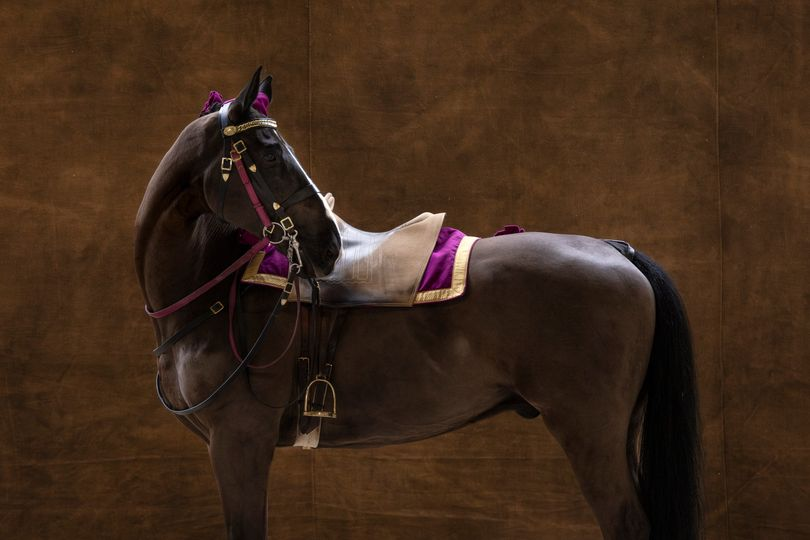

Hi, I’m Mainell 🎀
I’m interested in data analysis and life with horses ! ✨
I’m currently learning data sciences and natural horsemanship.
The tools I learned to use as part of my training are :
🎓 Python
🎓 NumPy
🎓 Pandas
🎓 Matplotlib
🎓 Plotly Express
🎓 Seaborn
🎓 Scikit-Learn
🎓 BeautifulSoup
🎓 AWS
🎓 DBT
🎓 Git & GitHub
🎓 SQL
🎓 Power BI
🎓 Tableau Desktop
Amazing, isn't it ?
How to reach me ?
Send me a message on LinkedIn : Linkedin
 Picture taken by Yann Arthus-Bertrand during an immersion at the Cadre Noir (IFCE) ! Wonderful ✨